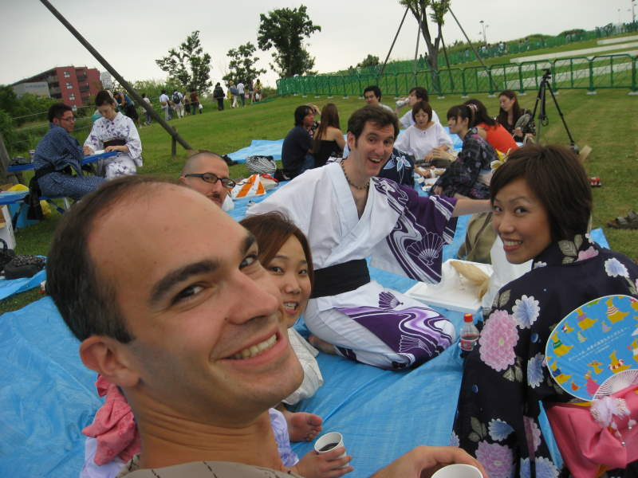
Here I am at Showa Kinen Park in Tokyo. This is a CouchSurfing.com get-together in Tokyo. The CouchSurfing project is something that I hold near and dear to my heart. If you're going off to some remote destination and want to be shown around and/or hosted by a local, you can go on www.couchsurfing.com and search for someone to host you. You can also host someone from another country. I've tried it a couple of times and it's been an awesome experience every time. They also have frequent meetups for people into couchsurfing or interested in it. On the website, I heard about a couchsurfing picnic going on during the fireworks in this park, so I was all for it. You can see here they're all a friendly bunch. You don't really get involved in couchsurfing unless you like other people. Here I was trying to take my own picture. The first one was completely off, so this bunch was very forgiving when they acted all cheerful for a second attempt.
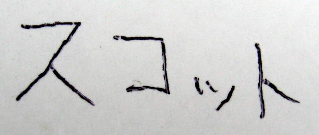
We had a signup sheet, and the lady at the table was nice enough to write my name in katakana, a Japanese script used for writing foreign words. I took a picture of it, and showed Japanese speakers the picture when they asked me my name.
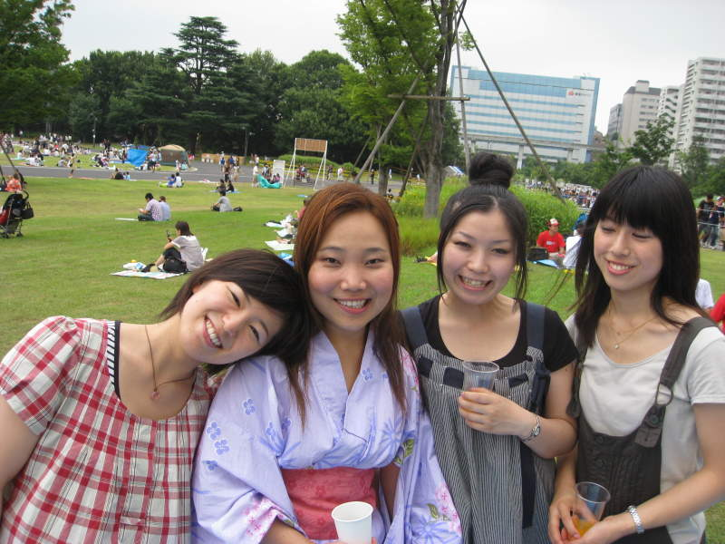
Second from the left is Monique, a couchsurfer from California, at the time planning to next visit her relatives in Thailand. The other three were locals, training to be flight attendants. Apparently it's a very competitive field, and they have to study for years. I remember the name of the girl on the far left, Irimi. Her name means "close" or "near". It's a word I use in aikido as well.
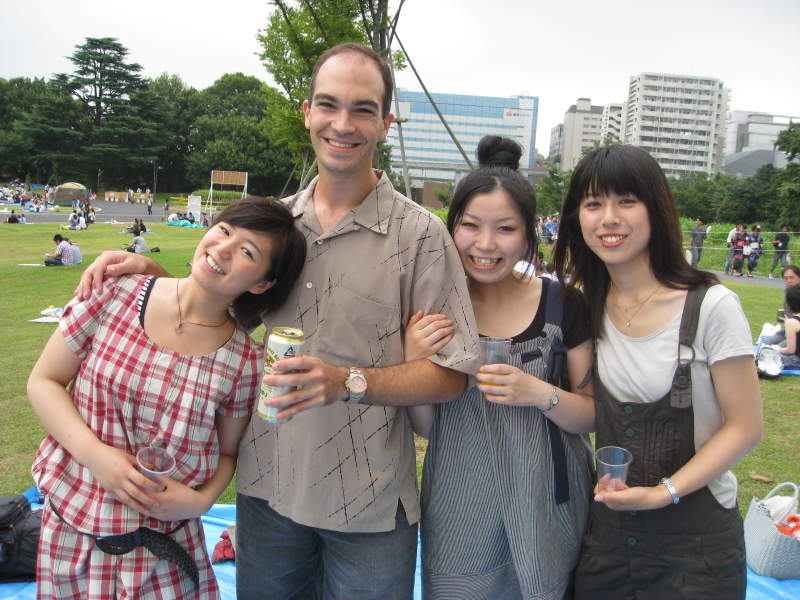
I will look forward to future flights to Japan thanks to these three.
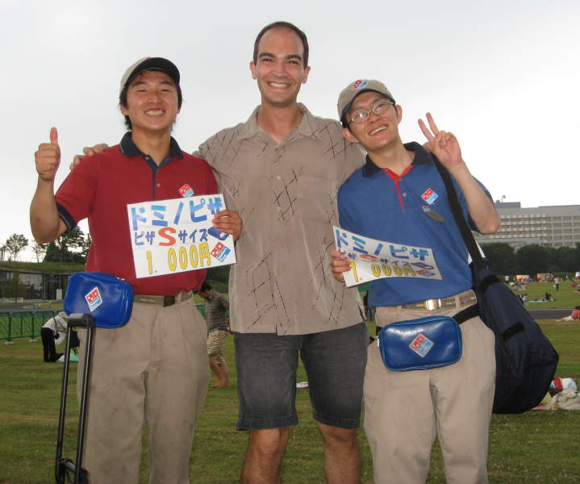
I will not look forward to Domino's pizza though, although these two were great.
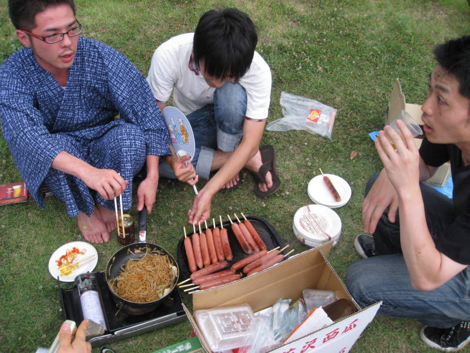
The ten bucks I spent got me as much of this food as I wanted, plus other food, and unlimited beer. It was a good deal with good food and good people. Fireworks too, which you'll see later.
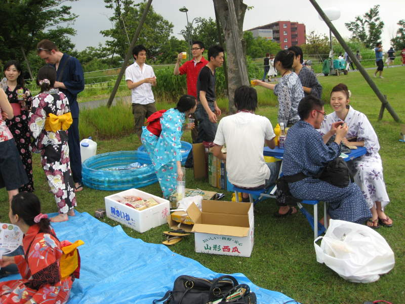
Here's a shot of the picnic while it was still light out. They had a great idea, keeping the beer on ice in the kiddie pool.
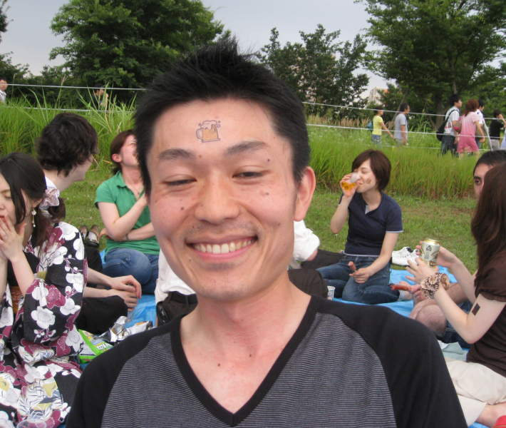
This guy kept the beer on his forehead.
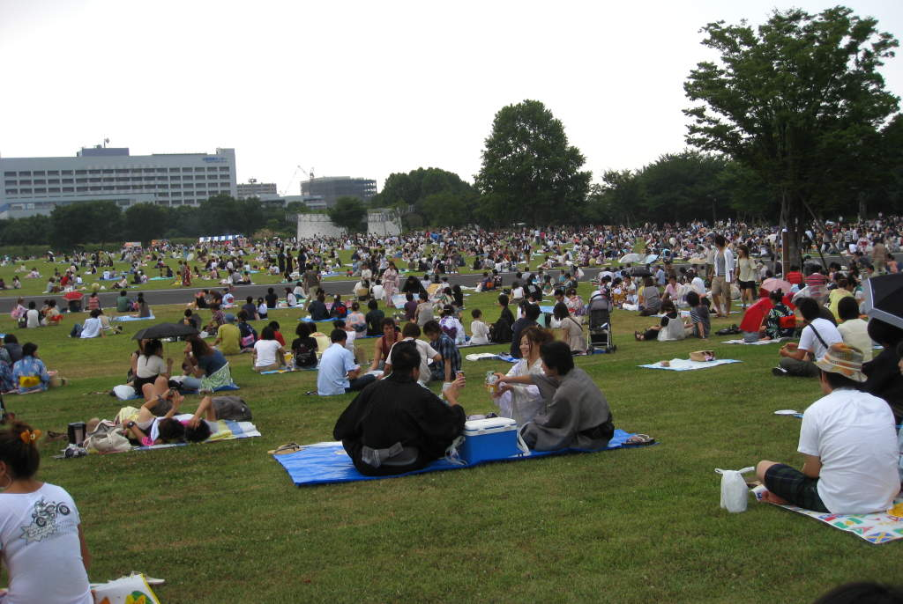
It wasn't just the couchsurfers there. We were also hanging out with a group from Facebook. All the people you see here are from neither. Japanese people adore fireworks and most of these people are locals, getting ready to go "Ooooh" and "Aaaah" repeatedly.
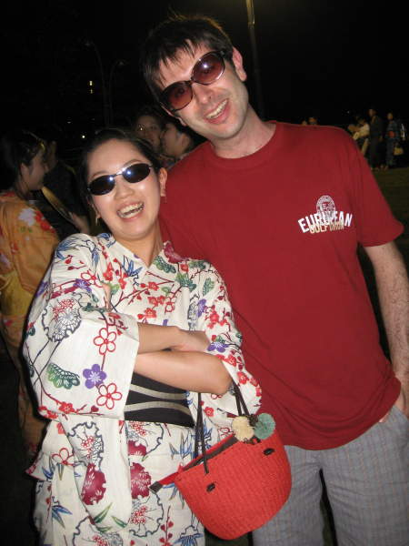
Night time is upon us. Something you also may have noticed is that many of the women are wearing yukatas. A good deal of the men too. Yukatas are traditional and they look stylish. A fireworks festival is the perfect time to wear one. Also, you get a discount on the food and beer if you show up in one. I did not.
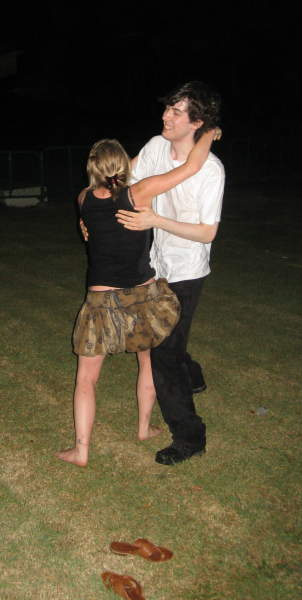
How do you get grass stains out of a white shirt? Maybe this guy knows.
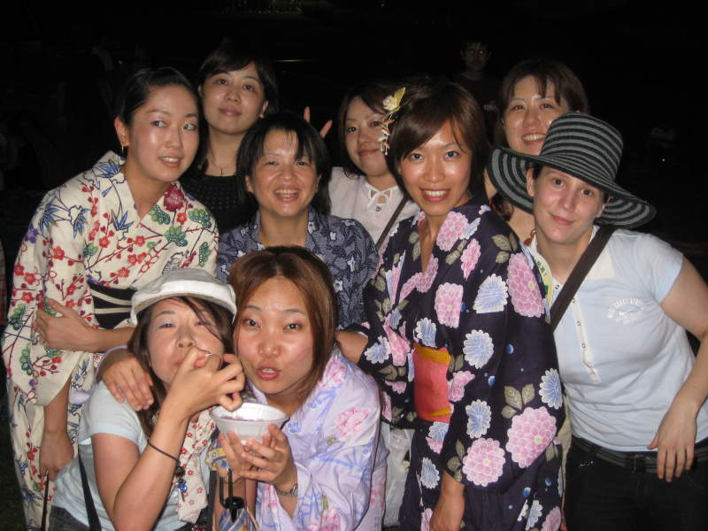
Group shot! Hmm... I see one girl got the bunny ears. Poor girl :(
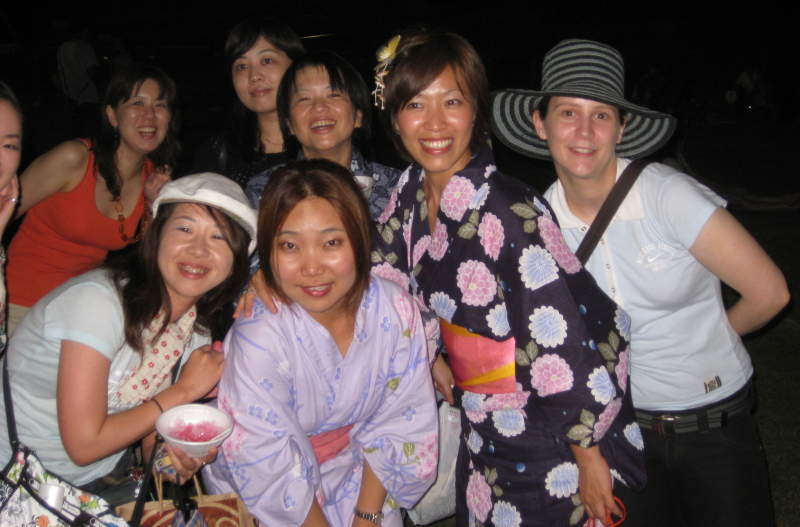
Here's a bunny ear-less shot.
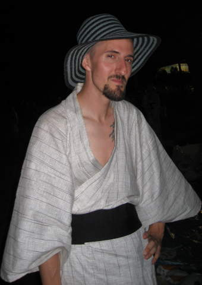
This man exudes confidence.
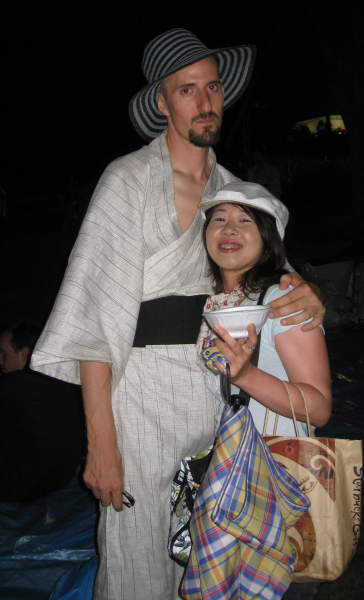
Confidence gets you places.
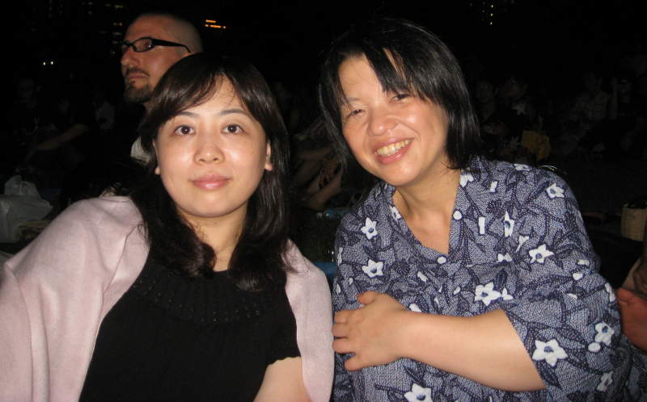
I promised the one on the left... I think her name is Shoko... that I would email her the fireworks pictures when I was done with them. She might have forgotten all about me by the time I finally finish typing these silly captions.
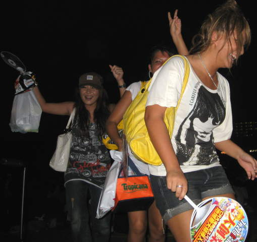
The girl in the back is definitely drunk. You see the fan in the lower right? Those things are indispensable in Japanese summers. It was hot and humid and I was sweating like nobody's business for the whole two weeks. It was easy to advertise your product by printing them on these complimentary fans, unless you were someone like me that couldn't read said advertisements. Speaking of that, something we saw that was uncanny. It's very rare in Japan to wear Japanese text on clothing. It's very common, however, to wear English text. Western culture is very popular in Japan.
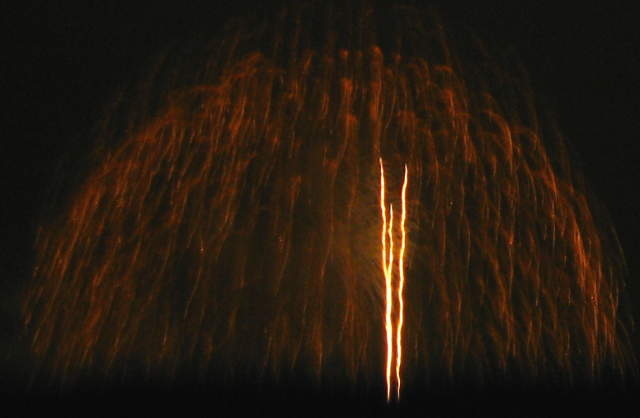
Finally the first few rockets shot off and we had our fireworks.
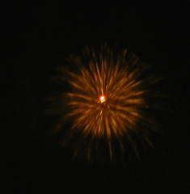
I did not have a tripod with me, so taking shots of fireworks was difficult. Some small ones like this one came out well enough.
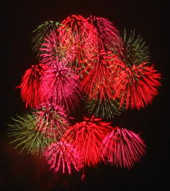
Here's a colorful volley of fireworks. If I zoomed in more, you'd see that you're actually staring at very jagged, unnatural lines, so I didn't zoom in more.
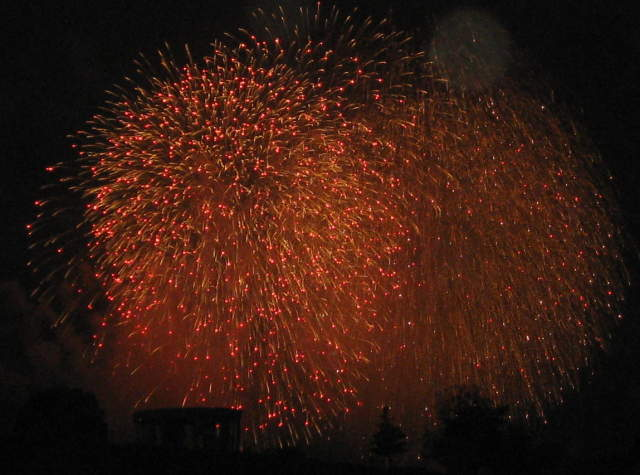
Certain types of fireworks didn't come out too badly.
More bombs bursting in the air.
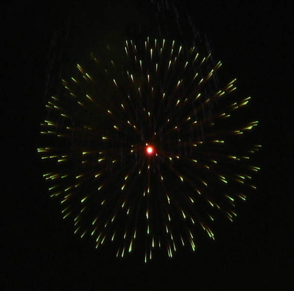
Hey, this shot came out really nicely. It looks like something out of a sci fi flick, no?
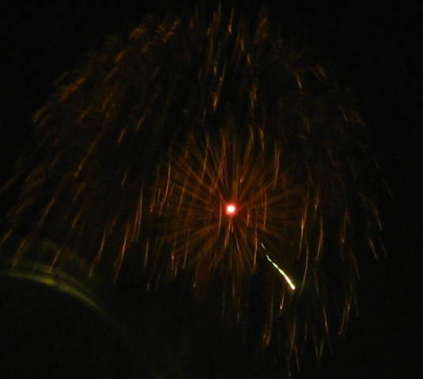
I know these orangish, skimpy sprays are a bit ugly. It's the best I could do.
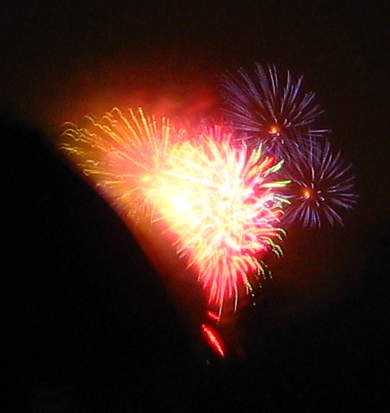
Here, this isn't as skimpy. The purple sprays came out nice.
I had to zoom in for this one.

This looks like a little yellow-orange flower in front of a field of stars.
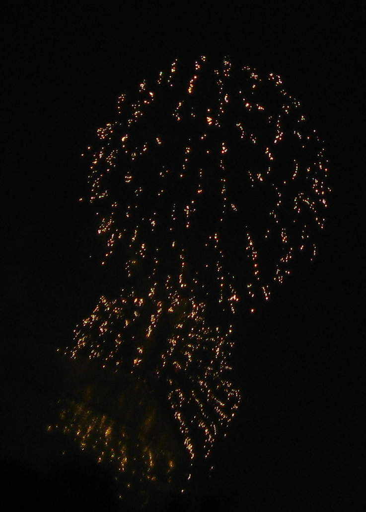
It was fairly dark out, and my nightvision is horrible. It was not easy to find the group again after each bathroom trip. However, at least I didn't have to wait on the massive line for the lady's room.
Lots of streaky lines mesh in a big jumble in the sky.
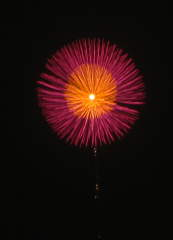
This was my last attempt to take a picture of fireworks without a tripod. It came out well enough to look decent at this crappy resolution.
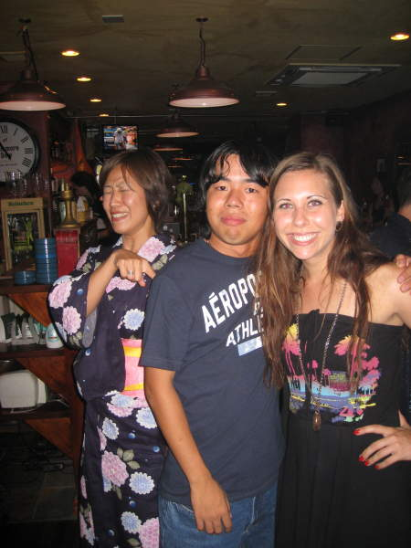
After the picnic, some of us made it to an Irish bar owned by a guy who called him self "Shogun". He was the shogun of Guinness for certain. Mone in the back seems to be laughing at something. She was very aware of how easily I could miss the last train back to my hotel, and had completely laid out the times for the trains and the stations to switch at. Very good organizer! Will miss them.
Back